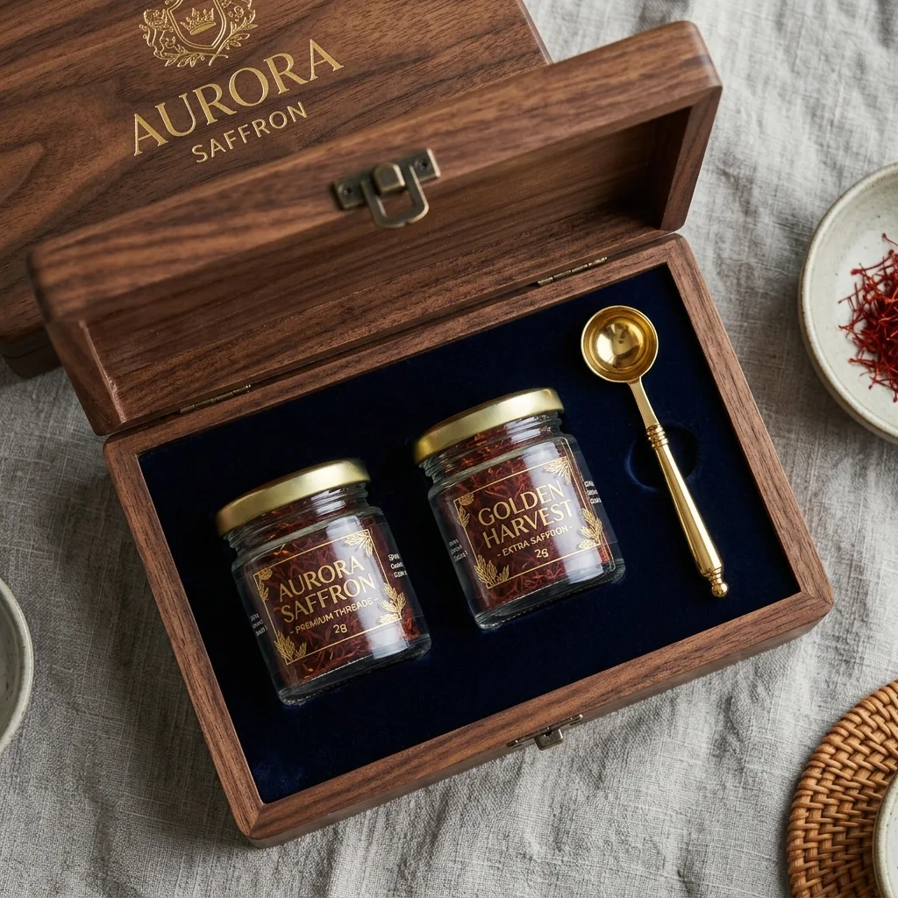

Delve into the clinically backed health attributes of Crocus sativus, the golden sunshine spice.

Saffron is the ultimate culinary colorant, giving biryanis, risottos, and pastries a glowing golden hue and warm honey-like finish.
Because of its extreme value and royal heritage, saffron is the gold standard of organic gifting, expressing honor and respect during festivals, weddings, and corporate celebrations.
Explore Saffron Catalog